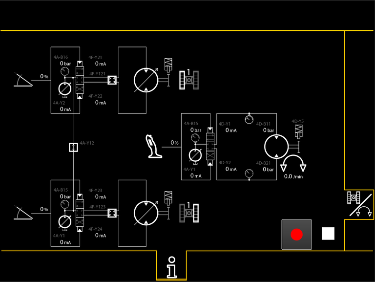
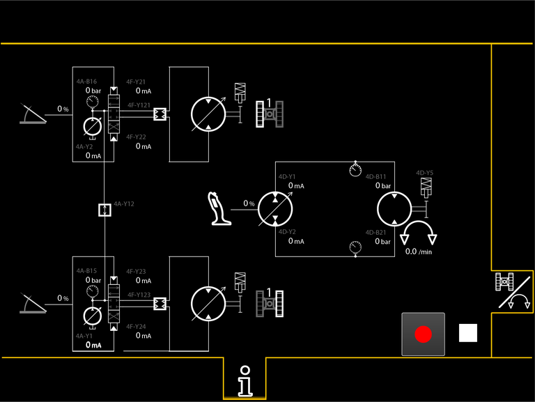

Bildschirmseite Fahrwerk und Drehwerk

Taste Bildschirmseite Fahrwerk und Drehwerk
Auf Bildschirmseite Fahrwerk und Drehwerk umschalten.

Fig. 2381: Bildschirmseite Fahrwerk und Drehwerk (Linkes und rechtes elektrisches Fahrwerk und Drehwerk offener Kreislauf)
Fig. 2381: Bildschirmseite Fahrwerk und Drehwerk (Linkes und rechtes elektrisches Fahrwerk und Drehwerk offener Kreislauf)

Fig. 2382: Bildschirmseite Fahrwerk und Drehwerk (Linkes und rechtes elektrisches Fahrwerk und Drehwerk geschlossener Kreislauf)
Fig. 2382: Bildschirmseite Fahrwerk und Drehwerk (Linkes und rechtes elektrisches Fahrwerk und Drehwerk geschlossener Kreislauf)
Die Anzeige der Bildschirmseite Fahrwerk und Drehwerk sind identisch mit den Anzeigen der Bildschirmseite Winde1 und Winde2 (Weitere Informationen siehe: „Bildschirmseite Winde1 und Winde2“).
Nachfolgend sind die zusätzlichen Anzeigen der Bildschirmseite Fahrwerk und Drehwerk beschrieben.
Anzeige Drehwerk
– | Position 1: Drehbewegung/min |
Ein positiver Wert zeigt die Drehbewegung im Uhrzeigersinn von oben an.
Ein negativer Wert zeigt die Drehbewegung gegen den Uhrzeigersinn von oben an.
Anzeige Linker Raupenträger
Linker Raupenträger.
Geschwindigkeitsstufe 1 des Fahrwerks ist gewählt.
Anzeige Linker Raupenträger
Linker Raupenträger.
Geschwindigkeitsstufe 2 des Fahrwerks ist gewählt.
Anzeige Linker Raupenträger
Linker Raupenträger.
Geschwindigkeitsstufe 3 des Fahrwerks ist gewählt.
Anzeige Rechter Raupenträger
Rechter Raupenträger.
Geschwindigkeitsstufe 1 des Fahrwerks ist gewählt.
Anzeige Rechter Raupenträger
Rechter Raupenträger.
Geschwindigkeitsstufe 2 des Fahrwerks ist gewählt.
Anzeige Rechter Raupenträger
Rechter Raupenträger.
Geschwindigkeitsstufe 3 des Fahrwerks ist gewählt.
Anzeige Pedal
Pedal.
– | Verstellung 1 des Pedals. |
Anzeige Schaltventil
Digitales Ventil ist geschlossen.
Digitales Ventil ist unbestromt.
Kein Ölfluss.
Anzeige Schaltventil (leuchtet gelb)
Digitales Ventil ist geschlossen.
Digitales Ventil kann nicht bestromt werden.
Kein Ölfluss.
Anzeige Schaltventil (leuchtet grün)
Digitales Ventil ist geöffnet.
Digitales Ventil ist bestromt.
Hydrauliköl fließt.
Anzeige Schaltventil (leuchtet rot)
Digitales Ventil ist geöffnet.
Digitales Ventil ist aufgrund einer Störung bestromt.
Hydrauliköl fließt.